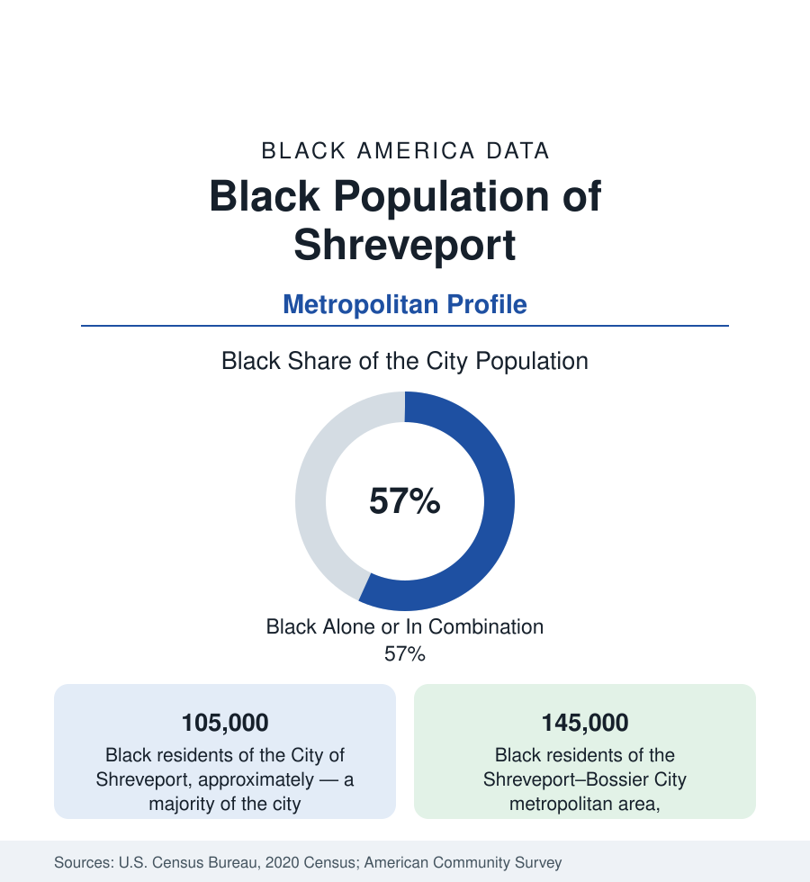

Black Cities
Black Shreveport: The Red River City of North Louisiana
Shreveport holds about 105,000 Black residents in the city and 145,000 across the metro — a majority-Black city on the Red River. The census profile.

Shreveport holds about 105,000 Black residents within the city — Black alone or in combination, a majority of its 188,000 people — and about 145,000 across the metropolitan area on both banks of the Red River. Northwest Louisiana's hub is one of the urban South's Black-majority anchors: a river-and-rail city whose Black community built the Ledbetter Heights and Stoner Hill neighborhoods, the Texas Avenue commercial world, and a blues lineage — Lead Belly was born in its countryside and sang its streets — that the national archive records as foundational.
Ledbetter Heights, Texas Avenue, and the River's Work
The geography centers west and south of downtown: Ledbetter Heights (the historic district around the old Fannin Street — the blues-and-vice strip of the steamboat era, where Lead Belly performed and the Municipal Auditorium later crowned Elvis's Louisiana Hayride years on the district's edge), Allendale and Lakeside (the mid-century heartland), Cedar Grove and Stoner Hill, Hollywood Heights and the southern subdivisions along Linwood and Bert Kouns, and the university ground — Southern University Shreveport (the two-year SUSLA, founded 1967) on MLK Drive north, with the Southern University System's Shreveport presence and the LSU Health Sciences Center downtown (the medical school whose teaching hospital anchors the district's employment). The Book of the community's institutions — the churches of Texas Avenue and Anna Street, the Little Union and Galilee congregations of the historic record, the Shreveport Sun (the Black weekly) — runs in the standard Southern pattern at majority scale.
Gambling Boats, Gas Fields, and the Government Payroll
The employment data stack three eras: the riverboat casino economy (the boats across in Bossier and the Horseshoe-era development of the riverfront — thousands of hospitality jobs from the 1990s forward, its workforce substantially Black); the Haynesville Shale (the natural-gas boom of 2008-forward that made Caddo and DeSoto parishes an energy file — royalty checks to Black landowners among its documented subplots — and its bust cycles in the employment series); and the government-military base: Barksdale Air Force Base across the river (the B-52 fleet's home, Global Strike Command's headquarters — the metro's largest single employment engine, its Black airmen and civilians a professional tier), the LSU Health medical center, the school district, and the port of Caddo-Bossier on the river's navigation channel. The indicators record the inland-South spread: median incomes below the national band, poverty concentrated in the historic districts, homeownership rooted in the southern and western subdivisions — and the industrial file (the old Libbey glass and GM plant closures in the manufacturing memory) as the cautionary layer.
The Music and the Movement Files
Shreveport's cultural data claim two first-rank entries: the blues (Lead Belly's Shreveport years, the Fannin Street scene, Kenny Wayne Shepherd's modern inheritance) and the gospel-and-radio world of KWKH's Louisiana Hayride era on the community's edge — with the Municipal Auditorium (the Hayride's house, an Art Deco landmark in Ledbetter Heights) as the physical archive. The movement file runs through the Little Union Baptist Church meetings and the 1963 march from Galilee Baptist — where police on horseback attacked the marchers in an episode the national record preserves — to the modern political data of a majority-Black city: its mayors and council majorities of the recent record, its school-board and commission politics as Caddo Parish's central text. The State Fair of Louisiana (its grounds in the city's west) and the Independence Bowl complete the civic calendar.
Change and the Estimates
The estimates show the metro near flat — the shale cycles and the casino market's regional competition in the series — its Black population growing slowly in count in Bossier Parish's suburbs (Bossier City's Black share climbing past a fifth) while Shreveport proper holds its majority at a slightly reduced count, the familiar core-suburb redistribution. The current files run through the 50 Cent-led downtown entertainment redevelopment plans (the Curtis '50 Cent' Jackson studio and property plays the business press has tracked in the city's core — a live, unresolved chapter as of this writing), the riverfront's next phase, and the I-49 corridor's completion politics.
Reading the Shreveport Numbers
Shreveport is the Red River's Black-majority anchor: a blues street and a bomber base, a medical school and a shale field, 145,000 metro residents whose majority status is not a recent turn but the city's modern condition. North Louisiana's capital in everything but law is, in the data, a Black city that hosts a region.
More in Black Cities
Black Atlanta: Population, Distribution, and Growth of a Black Metropolis
Metro Atlanta holds more than two million Black residents — roughly one in three, second only to New York. The suburban distribution, migration history, and composition of Black Atlanta in the census data.
Black New York: The Largest Black Population in America
The New York metropolitan area holds about 3.4 million Black residents — more than any metro in the nation — and the city itself about two million. The census profile.
Black Washington: The District and the Metro
The Washington metro holds about 1.6 million Black residents, and the District itself — long a majority-Black city — now records a Black share near 41 percent. The census profile.
Source: U.S. Census Bureau, 2020 Census; American Community Survey; Population Estimates Program.